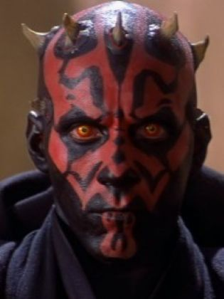
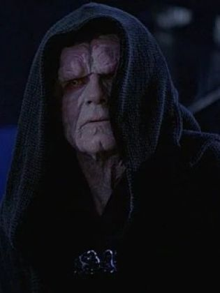

ou
Anakin Skywalker
"O Temido"
A Força em Star Wars é definida como um campo de energia misterioso criado pela vida que une toda a galáxia e que se comunica com os indivíduos por meio dos midi-chlorians. O poder da Força é usado pelos praticantes da Ordem Jedi e pelos Sith e outros sensíveis a essa energia.

"A Força é o que dá poder ao Jedi. É um campo de energia criado por todos os seres vivos, ela nos envolve e penetra. É o que mantém a galáxia unida."
Qualquer ser vivo que aprenda a manipular a Força, ganha vários poderes/habilidades extraordinários de natureza paranormal, como:
A Força possui dois lados, que veremos mais a baixo:
O lado luminoso da Força, também vulgarmente conhecido como Ashla, era o lado da Força alinhado com honestidade, compaixão, misericórdia, auto-sacrifício, e outras emoções positivas. Para a maior parte, os Jedi simplesmente se referem a este como a Força.
O lado sombrio da Força, também conhecido como lado negro da Força, chamado de Bogan ou de Boga pelos antigos Jedi, era o instrumento principal dos Lordes Sith, e o maior inimigo da Ordem Jedi. Oposto ao lado luminoso da Força, seu poder vinha das emoções negativas e fortes. Era associado com morte e destruição.
| Imagem | Personagem | Ocupação |
|---|---|---|
| Obi-Wan Kenobi | Mestre Jedi | |
| Yoda | Grão-Mestre Jedi | |
| Qui-Gon Jinn | Mestre Jedi | |
| Mace Windu | Mestre Jedi | |
| Luke Skywalker | Mestre Jedi | |
|  | Darth Maul | Lorde Sith |
|
Darth Vader ou Anakin Skywalker |
Lorde Sith |
|  | Darth Sidious | Lorde Sith |
| Count Dooku | Lorde Sith | |
| Jar Jar Blinks "O Temido" |
Lorde Sith |
O dia 4 de maio é celebrado como Dia de Star Wars, pois a famosa frase "Que a força esteja com você" em inglês é "May the force be with you", que soa como May the Fourth ou May the 4th (4 de maio).